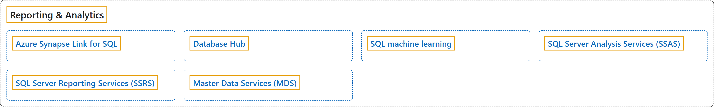

8. Reporting & Analytics
Classification

Glossary
| Term | Definition | 中文翻译 | Source |
|---|---|---|---|
| Azure Synapse Link for SQL Azure Synapse Link for SQL |
(context) "You can use the Azure Synapse Link for SQL functionality to replicate your operational data into an Azure Synapse Analytics dedicated SQL pool from SQL Server 2022." | （语境）你可以使用 Azure Synapse Link for SQL 功能，从 SQL Server 2022 把业务数据复制到 Azure Synapse Analytics 专用 SQL 池。 | Microsoft, 2025a, para. 1 |
| Database Hub 数据库中心 |
"Database Hub in Microsoft Fabric gives database teams one place to detect, investigate, act on, and automate responses to issues and opportunities across their database estate." | Microsoft Fabric 中的数据库中心为数据库团队提供一个统一的位置，用来发现、调查、处理并自动响应问题和机会，范围覆盖整个数据库资产。 | Microsoft, 2026b, para. 1 |
| SQL machine learning SQL 机器学习 |
(context) "Learn how to use machine learning on SQL to run Python and R on relational data, both on-premises and in the cloud." | （语境）了解如何在本地和云中使用 SQL 上的机器学习，以便在关系数据上运行 Python 和 R。 | Microsoft, 2022, para 1 |
| SQL Server Analysis Services (SSAS) SQL Server Analysis Services (SSAS) |
"Analysis Services is an analytical data engine (VertiPaq) used in decision support and business analytics." | Analysis Services 是一种分析数据引擎（VertiPaq），用于决策支持和业务分析。 | Microsoft, 2025b, para. 1 |
| SQL Server Reporting Services (SSRS) SQL Server Reporting Services (SSRS) |
"SQL Server Reporting Services (SSRS) provides a set of on-premises tools and services to create, deploy, and manage paginated reports." | SQL Server Reporting Services (SSRS) 提供一组本地工具和服务，用于创建、部署和管理分页报表。 | Microsoft, 2025c, para 2 (the Note before it is para 1) |
| Master Data Services (MDS) 主数据服务 (MDS) |
"Master Data Services enables you to manage a master set of your organization's data. You can organize the data into models, create rules for updating the data, and control who updates the data." | 主数据服务使你能够管理组织数据的主数据集。你可以将数据组织成模型、创建更新数据的规则，并控制谁可以更新数据。 | Microsoft, 2026a, para 3 (the Important note is para 1, "This topic describes..." is para 2) |
References
- Microsoft. (2022, May 24). SQL machine learning documentation. Microsoft Learn. https://learn.microsoft.com/en-us/sql/machine-learning
- Microsoft. (2025a, October 31). Azure Synapse Link for SQL Server 2022. Microsoft Learn. https://learn.microsoft.com/en-us/azure/synapse-analytics/synapse-link/sql-server-2022-synapse-link
- Microsoft. (2025b, April 29). What is Analysis Services? Microsoft Learn. https://learn.microsoft.com/en-us/analysis-services/analysis-services-overview
- Microsoft. (2025c, June 16). What is SQL Server Reporting Services (SSRS)? Microsoft Learn. https://learn.microsoft.com/en-us/sql/reporting-services/create-deploy-and-manage-mobile-and-paginated-reports
- Microsoft. (2026a, March 5). Master Data Services Overview (MDS). Microsoft Learn. https://learn.microsoft.com/en-us/sql/master-data-services/master-data-services-overview-mds
- Microsoft. (2026b, October 5). What is the Database Hub? Microsoft Learn. https://learn.microsoft.com/en-us/fabric/database/hub/